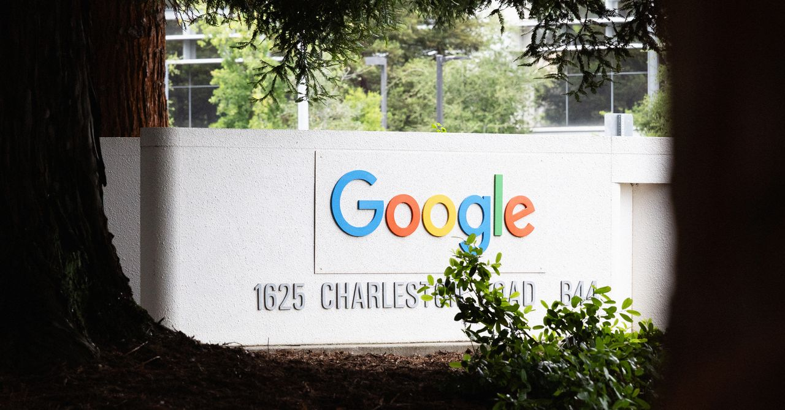
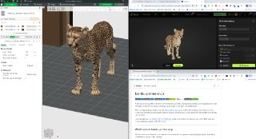
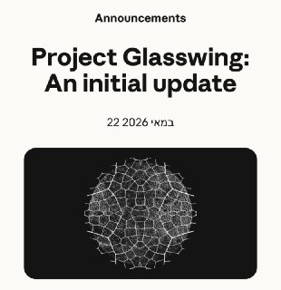
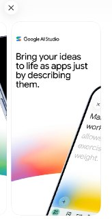
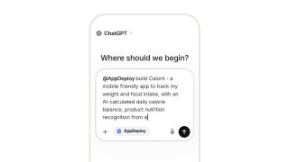
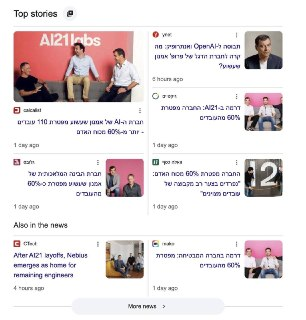

WIREDנמוכה28.05.2026, 00:00
The definitive story of how Claude Code and OpenClaw kicked off computing’s biggest transformation possibly ever.
אימות 1
The definitive story of how Claude Code and OpenClaw kicked off computing’s biggest transformation possibly ever.
הניסוח הזהיר יותר הוא: משרד המשפטים פרסם הנחיות חדשות לשימוש בטוח ב־AI, כולל בדיקות לפני פרסום והמלצות לגבי מאגרים מוגנים, בעקבות אזהרה מפני הפרת זכויות יוצרים ביצירת תוכן עם ChatGPT או ג'מיני.
הניסוח הזהיר יותר הוא: אלטמן ואמודיי מרככים את האזהרות מפני מחיקת משרות צווארון לבן בידי AI, ומודים שהגזימו בתחזיות.

According to federal prosecutors, Michele Spagnuolo made more than $1 million on the prediction market platform using confidential information about Google Search traffic.
מפתח מרדיט יצר תוסף דפדפן שמעביר שיחה בין חשבונות AI שונים בלחיצה אחת, כך שאם המכסה נגמרת אפשר להמשיך מאותה נקודה בלי לאבד הקשר או להקליד מחדש.
Manus השיקה עדכון לאפליקציית המובייל, שמאפשר גישה לפרויקטים גם מהטלפון ולא רק מהדפדפן. כל פרויקט כולל הנחיות לסוכן ה-AI, קבצים, קונקטורים, מיומנויות ולוחות משימות אוטומטיות, כך שאפשר להריץ תרחישים בלי לחזור על ההוראות בכל פעם.

OpenAI מוסיפה ל-ChatGPT חיבור מאובטח לחשבונות בנק, כרטיסי אשראי ותיקי השקעות דרך Plaid, במצב קריאה בלבד וללא אפשרות לבצע פעולות. השירות זמין כרגע למנויי פרו בארה״ב.

יש שרת MCP שמחבר את קלוד למדפסות Bambu Lab ומאפשר לנהל הדפסות תלת־ממד. בתהליך שתואר, תמונה הומרה ב‑Meshy AI למודל תלת־ממדי עם טקסטורה והוכנה להדפסה רב־צבעית דרך Bambu Studio.

יוטיוב הרחיבה לכל המשתמשים מעל גיל 18 את כלי זיהוי הדימיון מבוסס ה-AI, שמאפשר להעלות סריקת סלפי ולבקש לאתר סרטוני דיפייק שבהם מופיעים, עם אפשרות להגיש תלונה להסרה.

אנתרופיק טוענת שמאז שהעניקה לחברות גישה למודל מיתוס הוא איתר יותר מ־10,000 חולשות אבטחה קריטיות. בחברה אומרים שיוסיפו לו הגנות לפני שחרורו לציבור בקרוב.

תקלה בניהול המטמון בקודקס אצל חלק מהמשתמשים תוקנה, ובמקביל אופסו מגבלות השימוש בכל החשבונות.
אפשר לנתח תלוש שכר עם AI, אבל חשוב לא להעלות לצ׳אט פרטים מזהים או מסמכים מלאים.
רשימה של 6 כלי AI ל־web scraping: Crawl4AI, Firecrawl, Scrapy, Crawlee, Playwright ו־Scrapegraph AI. לפי הכותבים, הם מיועדים לחילוץ מהיר של נתונים גם מאתרים עם CAPTCHA, מגבלות קצב והגנות דפדפן, ולשימוש בפורמטים מוכנים למודלי שפה.
ב-Spotify צוברים תאוצה אמני בינה מלאכותית בדמות ויקינגים, שמתחזים למוזיקאים אמיתיים ומגיעים למיליוני השמעות. מאחורי הפרויקטים, לפי הדיווח, עומדת רשת של Iron Faith Records שמפיקה גם ראפרים ויקינגים ורוקרים נוצרים, לעיתים בקצב תעשייתי של עשרות אלבומים בחודש.
הפוסט מציג טענת "חינם", אבל בלי אימות ברור מול המוצר הרשמי, ולכן צריך לראות בזה טענה שדורשת בדיקה.

אפליקציית AI Studio של גוגל זמינה להרשמה מראש גם ב IOS בינה מלאכותית בטלגרם - t.me/AI_tg_il

לפי הנתונים, 40% מהוצאות ה-AI של חברות אנטרפרייז הולכות לאנת'רופיק, לעומת 27% בלבד ל-OpenAI, אחרי שבתחילה אנתרופיק עמדה על 50%.

הפוסט מנוסח בצורה שיווקית ומנופחת. העובדות שכדאי לקחת ממנו הן: קלוד ערך את הסרטון הזה עם היכולות החדשות של Hyperframes. כבר לא צריך להפריד שכבות עם כלי עריכת וידאו!
הפוסט מציג טענת "חינם", אבל בלי אימות ברור מול המוצר הרשמי, ולכן צריך לראות בזה טענה שדורשת בדיקה.
אני יודע שזה לא כל כך קשור לפה - אבל אני ממש ממליץ לכם לקרוא את הספר הזה, הוא מעולה!

הפוסט מציג טענת "חינם", אבל בלי אימות ברור מול המוצר הרשמי, ולכן צריך לראות בזה טענה שדורשת בדיקה.
הפוסט מציג טענת "חינם", אבל בלי אימות ברור מול המוצר הרשמי, ולכן צריך לראות בזה טענה שדורשת בדיקה.

הפוסט מנוסח בצורה שיווקית ומנופחת. העובדות שכדאי לקחת ממנו הן: זה לא נורמלי. שרתי כמה דקות ל- Suno AI שיומר מוזיקה עם AI, הוא למד ושמר את הקול שלי.

בפינת ה-AI של חדשות 12 דיברו לראשונה על קלוד, אחרי שימושים שהוצגו עם ChatGPT ו-Gemini, והראו איך הוא יכול לעזור בהשוואת מחירים וגם בהמלצות שימושיות.
למרות העלייה בגיוס החרדים, בצה"ל אומרים שהם ערוכים לקלוט עוד אלפים במגוון תפקידים, עם תשתיות ייעודיות. במחזור האחרון התגייסו 433 חרדים, מהם 272 כלוחמים, ובין המסלולים המוצעים גם "כולל בבסיס" לשילוב לימוד תורה עם אבטחת מתקנים.
על רקע מחסור של כ־15 אלף חיילים ושחיקת מערך המילואים, היחידה הרב־ממדית השלימה אימון אינטנסיבי והצטרפה ללחימה. היא נשענת על לוחמים ששירתו בה בסדיר ומתמקדת באיסוף מודיעין ובמכות אש מהירות, כולל שימוש ברחפנים מתאבדים.
למרות המתיחות מול איראן, בבית הלבן ממשיכים להיערך לאירוע UFC חריג במדשאה הדרומית ב-14 ביוני, ביום הולדתו ה-80 של טראמפ ובמסגרת חגיגות 250 שנה לארה"ב. המהלך כולל זירה זמנית, פסטיבל אוהדים וביקורת על התזמון והרעיון.
הפוסט מנוסח בצורה שיווקית ומנופחת. העובדות שכדאי לקחת ממנו הן: בסוכנות ״פארס״, המקורבת למשמרות המהפכה, דווח כי נשמעו הלילה שלושה פיצוצים ממזרח לעיר בנדר עבאס גורם אמריקני אישר ל"רויטרס" כי הותקף אתר צבאי שאיים על הכוחות באזור, וכי יורטו כטב״מים איראניים
צה"ל ניסה לחסל בצפון הרצועה את מח"ט צפון הרצועה ואת סגן מפקד חטיבת עזה, יממה אחרי חיסול מוחמד עודה. זהותם עדיין לא ברורה, והשניים קודמו אחרי שחוסלו קודמיהם.
Hyperliquid (HYPE) was the only major to hold a weekly gain, down 4.5% on the day but still up 2.4% over the past seven days. Tron (TRX) held a 1.9% weekly gain despite the broad decline. The drop flushed leveraged traders.
The pair collectively owns more than 30,000 BTC according to new filings, valued at more than $2.2 billion in total. Whether or not the Musk-led mega-firm will exist remains to be seen, but speculation is growing that the world’s richest man wishes to combine the

New York City, USA, 27th May 2026, Chainwire

Two papers published this week have reignited debates about the risk posed by “Q-day” to the cryptography that underpins digital assets.
Odds have jumped 13% in the last week as ETH continues to slide, trading just above $2,000 on Wednesday. Its recent fall has been catalyzed by nearly $500 million in ETF outflows over its 11-day losing streak.

הפועל פתח תקוה תעלה מול מכבי ת״א במדי רטרו מעונת 99/00 כהוקרה ל-800 חברי העמותה ולכבוד עונה היסטורית.